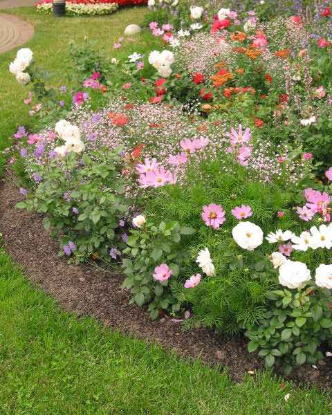

Садовые растения — Без растений садов не бывает. Они используются даже в аскетичных японских садах, хотя бы в качестве «заимствованного пейзажа» за забором. В садах свободной, пейзажной планировки растительной основой являются древесные виды. Крупные деревья становятся каркасом, на котором крепится вся композиция, а пышные кустарники заполняют объемы, подчеркивают пропорции и разграничивают пространство. Цветочные растения в таких садах играют роль бижутерии или макияжа — они лишь украшают сад, дополняют его цветом, но композицию не формируют. В садах симметричной, регулярной планировки растения нужны в основном для создания живых геометрических форм, и красочного фона в партерах. По этой причине среди древесных пород ценятся лишь те, что пригодны для стрижки, а среди цветочных те, что сохраняют декоративность или цветут в течение всего лета. В «букетных» садах основу, естественно, составляют цветочные растения, как многолетние, так и те, что высаживаются лишь на сезон. Древесные растения используются очень умеренно — в основном для создания высотных доминант и живых изгородей.
Особое место растения занимают в миксбордерах. Пышный садовый миксбордер – этот яркий неувядающий букет – предел мечтаний любого садовода. Эти цветники располагают вдоль стены здания, забора или вдоль дорожки и, в зависимости от стиля, заполняют самыми разнообразными растениями. Классические миксбордеры собирают из травянистых многолетников и лишь дополняют их летними и двулетними культурами. Такие композиции являются характерным элементом ландшафтных садов, но в наше время они полюбились настолько, что стали одними из самых распространенных видов цветников современного дачного сада. Совершенно естественно, что стилистика миксбордеров очень расширилась, и ныне их создают не только из цветочных, но и из древесных растений. Особенно интересны такие фантазийные интерпретации, как миксбордер-рокарий, теневой миксбордер, или очень модные ныне монохромные композиции.
Порядок высадки растений
Размещая растения, многие не задумываются, что от порядка их
высадки зависит рисунок композиции, а в конечном счете — вся жизнь
сада. Позвольте предложить вам мою систему высадки растений,
довольно рациональную и проверенную на многочисленных ошибках, к
счастью, не моих.
В первую очередь сажают хвойные и лиственные деревья. Растения с красивой кроной становятся доминантной основой композиции и формируют «скелет» сада, а те, что обладают красивой листвой или плотной кроной, создают кулисы. Это правило надо неукоснительно соблюдать не только для создания сбалансированной картины, но и потому, что эти растения высаживают навсегда.
Во вторую очередь высаживают кустарники. Разнообразие этих растений столь велико, что после их посадки можно считать работу по созданию сада полностью законченной. Для любителей цветочных растений такое утверждение может показаться обидным, и зря, ведь кустарники бывают как лиственными, так и хвойными, они не только обладают листвой разной формы, фактуры и окраски, но и прекрасно цветут. И все же главной работой, которую выполняют кустарники в саду, становится формирование объемов — без них сад будет плоским.
Самые надежные — травянистые многолетники. Им нет числа, и для каждого сада можно выбрать достаточный ассортимент прекрасных растений как для цветения, так и для декорации красивыми листьями. Для дизайна наиболее ценны виды и сорта с красивыми листьями — хосты, бруннеры, медуницы, астильбоидесы, дармеры, тиареллы, манжетки, папоротники и декоративные травы. Для садовода наиболее желанны красивоцветущие многолетники — флоксы, пионы, дельфиниумы, люпины, маки, всевозможные ромашки и колокольчики. Как ни печально, но именно эти растения становятся «врагами» любой композиции, поскольку после цветения их невзрачные листья сад не украшают. Именно поэтому этих красавцев приходится маскировать декоративнолиственными видами или прятать в миксбордеры. К счастью для нас, среди многолетников очень много растений, совмещающих в себе лучшие качества — красивое цветение и эффектную листву, именно они чаще других заполняют наши сады и прикрывают прорехи в композициях.